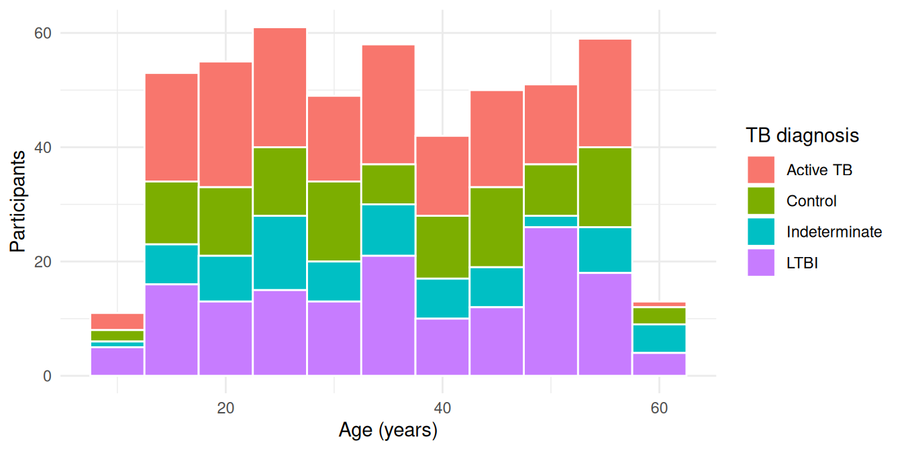

library(readr) # fast, consistent CSV reading
library(readxl) # Excel files (.xls and .xlsx)
library(dplyr) # data manipulation
library(purrr) # repeat a step over many sheets
library(janitor) # tidy column names, find duplicates
library(here) # build file paths from the project root
library(ggplot2) # a quick plot to check the dataImporting data into RStudio with R
Tutorial 1: CSV and Excel files, multiple sheets, and checking what you loaded
Tutorial
R
readr
readxl
Data import
Load CSV and Excel files into R with readr and readxl, combine one sheet per study visit into a single table, and check the import before you analyse anything.
NoteWhat you’ll learn
- Organise files in an RStudio Project and build paths with
here() - Read CSV files with
read.csv()andreadr::read_csv(), and see why they differ - Read Excel files with
readxl, including choosing sheets and handling missing-value codes - Combine several sheets (one per study visit) into one table
- Check an import with
glimpse(),count()andget_dupes()
ImportantSimulated data
This tutorial uses a small extract of a simulated bronchoalveolar lavage (BAL) study: 500 fictional participants with TB diagnosis, HIV status and BAL cell counts. No row describes a real person.
Download bal_metadata.xlsx Download bal_cell_counts.xlsx Download bal_baseline.csv
1. Set up an RStudio Project
Start every analysis in an RStudio Project (File → New Project). A project sets the working directory to the project folder, so file paths are the same on every computer that opens it.
A simple layout:
my-analysis/
├── my-analysis.Rproj
├── data/
│ ├── bal_metadata.xlsx
│ ├── bal_cell_counts.xlsx
│ └── bal_baseline.csv
└── analysis.qmdPut the three downloaded files in data/, then load the packages used in this tutorial (install any you’re missing with install.packages()):
here() builds a path starting from the project root, wherever your script lives:
# In your own project:
metadata_path <- here("data", "bal_metadata.xlsx")
Tip
Avoid setwd("C:/Users/me/Desktop/..."). A hard-coded path only works on your own computer, and breaks as soon as you move the folder or share it.
2. Read a CSV file
bal_baseline.csv is the tidy baseline table. R can read it in two ways.
Base R comes with read.csv():
baseline_base <- read.csv(baseline_path)
str(baseline_base[, 1:6])'data.frame': 502 obs. of 6 variables:
$ pt_id : chr "SP34696" "SP22845" "SP31186" "SP39161" ...
$ sex : chr "Female" "Female" "Male" "Female" ...
$ tb_diagnosis: chr "LTBI" "Control" "LTBI" "Control" ...
$ hiv_status : chr "Negative" "Positive" "Negative" "Positive" ...
$ age_at_visit: int 53 30 15 50 30 35 54 38 20 43 ...
$ bronc_date : chr "2018-07-01" "2020-04-16" "2020-07-01" "2016-07-29" ...readr has read_csv() (note the underscore):
baseline <- read_csv(here("data", "bal_baseline.csv"))baseline# A tibble: 502 × 17
pt_id sex tb_diagnosis hiv_status age_at_visit bronc_date dr_name
<chr> <chr> <chr> <chr> <dbl> <date> <chr>
1 SP34696 Female LTBI Negative 53 2018-07-01 Dr. Van Der M…
2 SP22845 Female Control Positive 30 2020-04-16 Dr. Naidoo
3 SP31186 Male LTBI Negative 15 2020-07-01 Dr. Van Der M…
4 SP39161 Female Control Positive 50 2016-07-29 Dr. Smith
5 SP06180 Female LTBI Positive 30 2018-08-23 Dr. Smith
6 SP34673 Male Control Positive 35 2020-01-06 Dr. Jacobs
7 SP03636 Female Active TB Negative 54 2017-03-25 Dr. Botha
8 SP31558 Female LTBI Positive 38 2016-12-24 Dr. Botha
9 SP19235 Male Control Positive 20 2016-07-01 Dr. Botha
10 SP15306 Female Active TB Positive 43 2020-06-26 Dr. Van Der M…
# ℹ 492 more rows
# ℹ 10 more variables: vol_pbs_in_ml <dbl>, vol_pbs_out_ml <dbl>, lobe <chr>,
# lab_tech <chr>, pellet_colour <chr>, live_cells <dbl>, dead_cells <dbl>,
# total_cells <dbl>, time_to_process_min <dbl>, diff_method <chr>Look at bronc_date. Base R reads it as plain text (chr); read_csv() recognises it as a date, so you can sort, filter and calculate with it straight away. read_csv() also returns a tibble, which prints only the first rows and shows each column’s type.
Tip
Prefer read_csv() for most work: it’s faster on large files, guesses types more sensibly, and never silently turns text into factors.
3. Read an Excel file
Excel workbooks can hold several sheets, so list them first:
excel_sheets(metadata_path)[1] "MetaData"Then read the sheet you want by name:
metadata_raw <- read_excel(metadata_path, sheet = "MetaData")
glimpse(metadata_raw)Rows: 502
Columns: 29
$ Pt_ID <chr> "SP34696", "SP22845", "SP31186", "SP39161", "SP061…
$ Sex <chr> "F", "Female", "Male", "Female", "Female", "Male",…
$ Age <dbl> 53, 30, 15, 50, 30, 35, 54, 38, 20, 43, 44, 27, 24…
$ Date_Seen <chr> "01/08/2019", "25/07/2017", "21/06/2020", "28/09/2…
$ `Height_1(cm)` <chr> "182.6", "160.3", "143.9", "165.8", "173.8", "172"…
$ `Height_2(cm)` <chr> "180.6", "160", "143.9", "165.7", "174.5", "171.9"…
$ `Weight_1(kg)` <chr> "55.1", "50.3", "57.7", "59.2", "80.5", "72.099999…
$ `Weight_2(kg)` <chr> "54.7", "51.2", "57.6", "59", "79.90000000000001",…
$ Smoking_Status <chr> "no", "ex", "Ex-smoker", "ex", "no", "yes", "Yes",…
$ Drug_Use <chr> "Y", "No", "YES", "No", "YES", "Yes", "No", "No", …
$ Drug_Type <chr> "crystal meth", NA, "Cannabis", NA, "mandrax", "mu…
$ Vaping <chr> "No", "Yes", "No", "no", "NO", "Yes", "N", "Yes", …
$ Vaping_Type <chr> NA, "Pod", NA, NA, NA, "juul", NA, "Juul", "e-ciga…
$ GeneXpert_Res <chr> "MTB not detected", "MTB not detected", "MTB not d…
$ GeneXpert_RIF <chr> "Sensitive", "Not applicable", "N/A", "ND", "ND", …
$ Smear_Grade <chr> "Neg", "Neg", "Neg", "Negative", "NEG", "Negative"…
$ CXR_Finding <chr> "No abnormality", "No abnormality", "No abnormalit…
$ IGRA_Result <chr> "POSITIVE", "Negative", "Pos", "Negative", "Positi…
$ `IGRA_Value(IU/ml)` <chr> "9.130000000000001", "0.01", "9.93", "0.16", "5", …
$ TB_Diagnosis <chr> "LTBI", "Control", "LTBI", "Control", "LTBI", "Con…
$ HIV_Status <chr> "Negative", "Positive", "Negative", "Positive", "P…
$ CD4_Count <dbl> NA, 354, NA, 562, 529, 459, NA, 406, 364, 169, NA,…
$ `Viral_Load(cp/ml)` <dbl> NA, 1346, NA, 4213, 171, 383061, NA, 90239, 24018,…
$ ART <chr> NA, "NO", NA, "NO", "NO", "no", NA, "Yes", "no", "…
$ ART_Regimen <chr> NA, NA, NA, NA, NA, NA, NA, "TDF/3TC/DTG", NA, NA,…
$ ART_Start_Date <chr> NA, NA, NA, NA, NA, NA, NA, "07/08/2014", NA, NA, …
$ Ethnicity <chr> "White", "mixed race", "WHITE", "White", "BLACK AF…
$ Referral_Source <chr> "Elsies River CHC", "Eerste River", "retreat chc",…
$ Study_Group <chr> "LTBI", "Control", "LTBI", "Control", "LTBI", "Con…Two things stand out:
- The column names contain brackets and slashes (
Height_1(cm),IGRA_Value(IU/ml)), so you’d have to wrap them in backticks every time you use them. - Height, weight and IGRA value should be numbers, but they were read as text (
<chr>).
Why are they text? Look at the values that aren’t numbers:
metadata_raw |>
filter(is.na(suppressWarnings(as.numeric(`Height_1(cm)`))),
!is.na(`Height_1(cm)`)) |>
count(`Height_1(cm)`, sort = TRUE)# A tibble: 5 × 2
`Height_1(cm)` n
<chr> <int>
1 - 4
2 . 4
3 N/A 3
4 ND 3
5 not done 3The people who entered the data recorded “missing” in five different ways. One text value is enough to make the whole column text. Tell read_excel() which codes mean missing with the na argument, and use clean_names() to fix the column names:
missing_codes <- c("", "N/A", "ND", ".", "-", "not done")
read_excel(metadata_path, sheet = "MetaData", na = missing_codes) |>
clean_names() |>
select(pt_id, age, height_1_cm, weight_1_kg, igra_value_iu_ml) |>
glimpse()Rows: 502
Columns: 5
$ pt_id <chr> "SP34696", "SP22845", "SP31186", "SP39161", "SP06180"…
$ age <dbl> 53, 30, 15, 50, 30, 35, 54, 38, 20, 43, 44, 27, 24, 4…
$ height_1_cm <chr> "182.6", "160.3", "143.9", "165.8", "173.8", "172", "…
$ weight_1_kg <chr> "55.1", "50.3", "57.7", "59.2", "80.5", "72.099999999…
$ igra_value_iu_ml <dbl> 9.13, 0.01, 9.93, 0.16, 5.00, 0.09, 0.16, 2.84, NA, 4…The column names are fixed and igra_value_iu_ml is now numeric, but height and weight are still text. This is a second, very common Excel problem: numbers stored as text. The cells look like numbers, but Excel saved them as text, and read_excel() keeps whatever type Excel stored.
The reliable fix is to read the sheet as text, then let readr::type_convert() guess each column’s type from its contents, treating the missing-value codes as NA:
metadata <- read_excel(metadata_path, sheet = "MetaData", col_types = "text") |>
type_convert(na = missing_codes) |>
clean_names()
metadata |>
select(pt_id, age, height_1_cm, weight_1_kg, igra_value_iu_ml) |>
glimpse()Rows: 502
Columns: 5
$ pt_id <chr> "SP34696", "SP22845", "SP31186", "SP39161", "SP06180"…
$ age <dbl> 53, 30, 15, 50, 30, 35, 54, 38, 20, 43, 44, 27, 24, 4…
$ height_1_cm <dbl> 182.6, 160.3, 143.9, 165.8, 173.8, 172.0, 168.9, 156.…
$ weight_1_kg <dbl> 55.1, 50.3, 57.7, 59.2, 80.5, 72.1, 39.3, NA, 57.1, 8…
$ igra_value_iu_ml <dbl> 9.13, 0.01, 9.93, 0.16, 5.00, 0.09, 0.16, 2.84, NA, 4…All the measurement columns are now numeric (<dbl>), and every column name is lowercase with underscores.
TipOther useful
read_excel() arguments
skip = 3ignores title rows above the tablerange = "A1:F200"reads only part of a sheetcol_types = "text"reads everything as text, which is useful when you want to clean values yourself before converting them
4. Combine one sheet per visit
bal_cell_counts.xlsx has one sheet for each study visit, with the same columns on every sheet:
excel_sheets(cells_path)[1] "Baseline" "Month3" "Month6" "Month12" Rather than reading each sheet by hand, read them all in one step with map(), then stack them with list_rbind(). The names_to = "visit" argument adds a column recording which sheet each row came from:
excel_sheets(cells_path) |>
set_names() |>
map(\(sheet) read_excel(cells_path, sheet = sheet, na = missing_codes)) |>
list_rbind(names_to = "visit")Error in `list_rbind()`:
! Can't combine `Baseline$Macrophages%` <character> and `Month6$Macrophages%` <double>.It fails. read_excel() works out each column’s type separately for each sheet, and Macrophages% has numbers stored as text on some sheets but not others. So the same column is text on one sheet and a number on another, and R won’t stack them.
The fix is the same pattern as in section 3: read every sheet as text, stack them, then let type_convert() guess the types once, across all rows together:
cell_counts <- excel_sheets(cells_path) |>
set_names() |>
map(\(sheet) read_excel(cells_path, sheet = sheet, col_types = "text")) |>
list_rbind(names_to = "visit") |>
type_convert(na = missing_codes) |>
clean_names() |>
mutate(visit = factor(visit, levels = c("Baseline", "Month3", "Month6", "Month12")))
cell_counts |>
count(visit)# A tibble: 4 × 2
visit n
<fct> <int>
1 Baseline 500
2 Month3 382
3 Month6 317
4 Month12 255Fewer participants return at each visit, which is typical of a longitudinal study. The cell count columns are now numeric on every row:
cell_counts |>
select(visit, pt_id, total_cells, macrophages_percent, lymphocytes_percent) |>
glimpse()Rows: 1,454
Columns: 5
$ visit <fct> Baseline, Baseline, Baseline, Baseline, Baseline, …
$ pt_id <chr> "SP00013", "SP00169", "SP00211", "SP00403", "SP004…
$ total_cells <dbl> 3340000, 4929123, 6000000, 4972646, 4337906, 45400…
$ macrophages_percent <dbl> 78.90000, NA, 62.20000, 85.60000, 50.30000, 89.851…
$ lymphocytes_percent <dbl> 14.4, 11.8, 21.5, 11.6, 21.9, 18.4, 28.2, 26.9, 36…5. Check what you imported
Always check a new import before you analyse it. These checks take seconds and catch most problems early.
Categories with inconsistent spelling. count() shows every distinct value:
metadata |>
count(hiv_status, sort = TRUE)# A tibble: 8 × 2
hiv_status n
<chr> <int>
1 Negative 265
2 Positive 170
3 Neg 13
4 POSITIVE 13
5 Pos 12
6 NEGATIVE 11
7 negative 10
8 positive 8Eight spellings of two answers. Cleaning these up is the next step after importing, but count() is how you find them.
Duplicate participants. Each participant should appear once:
metadata |>
get_dupes(pt_id) |>
select(pt_id, dupe_count, sex, age, tb_diagnosis)# A tibble: 4 × 5
pt_id dupe_count sex age tb_diagnosis
<chr> <int> <chr> <dbl> <chr>
1 SP09573 2 Female 49 Active TB
2 SP09573 2 Female 49 Active TB
3 SP22251 2 Male 55 Active TB
4 SP22251 2 Male 55 Active TB Two participants were entered twice. Decide whether to keep the first row or investigate before you join this table to anything else, or the duplicates will multiply your rows.
Missing values per column:
metadata |>
summarise(across(everything(), \(x) sum(is.na(x)))) |>
tidyr::pivot_longer(everything(), names_to = "column", values_to = "n_missing") |>
filter(n_missing > 0) |>
arrange(desc(n_missing))# A tibble: 13 × 2
column n_missing
<chr> <int>
1 art_start_date 411
2 art_regimen 404
3 cd4_count 300
4 viral_load_cp_ml 300
5 art 300
6 vaping_type 285
7 drug_type 243
8 gene_xpert_rif 192
9 weight_2_kg 23
10 igra_value_iu_ml 23
11 weight_1_kg 18
12 height_1_cm 17
13 height_2_cm 14A quick plot often shows problems that tables hide:
ggplot(metadata, aes(age, fill = tb_diagnosis)) +
geom_histogram(binwidth = 5, colour = "white") +
labs(x = "Age (years)", y = "Participants", fill = "TB diagnosis") +
theme_minimal()
Common pitfalls
| Problem | Symptom | Fix |
|---|---|---|
| Hard-coded paths | cannot open file 'C:/Users/...' on another computer |
Use an RStudio Project and here() |
| Missing-value codes | Numeric columns read as <chr> |
Pass every code to na = |
| Numbers stored as text in Excel | Still <chr> after setting na; sheets won’t stack |
col_types = "text", then type_convert() |
| Awkward column names | Backticks everywhere: `Height_1(cm)` |
janitor::clean_names() |
| Dates read as text | bronc_date is <chr> |
Use read_csv(), or parse with lubridate |
| Duplicate IDs | Row counts grow after a join | Check with get_dupes() before joining |
| File open in Excel | Permission or lock errors on Windows | Close the file in Excel and read it again |
Next
You now have metadata, cell_counts and baseline loaded in R. In Tutorial 2 you’ll pass the same data to Python as a pandas DataFrame, so you can use R and Python in one analysis.